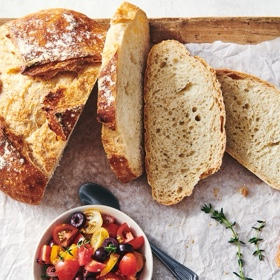

← All recipes
No-Knead Crusty White Bread

Servings: 12 per loaf · Prep: 5 min · Cook: 40 min
Ingredients
- 7 1/2 cups (900g) King Arthur Unbleached All-Purpose Flour
- 3 cups (680g) water, lukewarm
- 1 tablespoon (18g) table salt
- 1 1/2 tablespoons (14g) instant yeast or active dry yeast
Directions
- The flour/liquid ratio is important in this crusty bread recipe, so measure carefully. Your best bet is to weigh the flour; or measure it by gently spooning it into a cup, then sweeping off any excess.
- Combine all of the ingredients in a large mixing bowl, or a large (6-quart), food-safe plastic bucket. For first-timers, "lukewarm" means about 105°F, but don't stress over getting the temperatures exact here. Comfortably warm is fine; "OUCH, that's hot!" is not. Yeast is a living thing; treat it nicely.
- Mix and stir everything together to make a very sticky, rough dough. If you have a stand mixer, beat at medium speed with the beater blade for 30 to 60 seconds. If you don't have a mixer, just stir-stir-stir with a big spoon or dough whisk until everything is combined.
- Next, you're going to let the dough rise. If you've made the dough in a plastic bucket, you're all set — just let it stay there, covering the bucket with a lid or plastic wrap; a shower cap actually works well here. If you've made the dough in a bowl that's not at least 6-quart capacity, transfer it to a large bowl; it's going to rise a lot. There's no need to grease the bowl, though you can if you like; it makes it a bit easier to get the dough out when it's time to bake bread.
- Cover the bowl or bucket, and let the dough rise at room temperature for 2 hours. Then refrigerate it for at least 2 hours, or for up to about 7 days. (If you're pressed for time, skip the room-temperature rise, and stick it right into the fridge). The longer you keep it in the fridge, the tangier it'll get; if you chill it for 7 days, it will taste like sourdough. Over the course of the first day or so, it'll rise, then fall. That's OK; that's what it's supposed to do.
- When you're ready to make bread, sprinkle the top of the dough with flour; this will make it easier to grab a hunk. Grease your hands, and pull off about 1/4 to 1/3 of the dough — a 400g to 540g piece, if you have a scale. It'll be about the size of a softball, or a large grapefruit.
- Plop the sticky dough onto a floured work surface, and round it into a ball, or a longer log. Don't fuss around trying to make it perfect; just do the best you can.
- Place the loaf on a piece of parchment (if you're going to use a baking stone); or onto a lightly greased or parchment-lined baking sheet. Sift a light coating of flour over the top; this will help keep the bread moist as it rests before baking. Drape the bread with greased plastic wrap, or cover it with a reusable cover.
- Let the loaf warm to room temperature and rise; this should take about 60 minutes (or longer, up to a couple of hours, if your house is cool). It won't appear to rise upwards that much; rather, it'll seem to settle and expand. Preheat your oven to 450°F while the loaf rests. If you're using a baking stone, position it on a middle rack while the oven preheats. Place a shallow metal or cast iron pan (not glass, Pyrex, or ceramic) on the lowest oven rack, and have 1 cup of hot water ready to go.
- When you're ready to bake, take a sharp knife and slash the bread 2 or 3 times, making a cut about 1/2" deep. The bread may deflate a bit; that's OK, it'll pick right up in the hot oven.
- Place the bread in the oven — onto the baking stone, if you're using one, or simply onto a middle rack, if it's on a pan — and carefully pour the 1 cup hot water into the shallow pan on the rack beneath. It'll bubble and steam; close the oven door quickly.
- Bake the crusty bread for 25 to 35 minutes, until it's a deep, golden brown.
- Remove the bread from the oven, and cool it on a rack.
- Store leftover no-knead crusty bread in a plastic bag at room temperature. For longer storage options, see our blog post, Freezing no-knead bread dough, for details.
Original source: kingarthurbaking.com